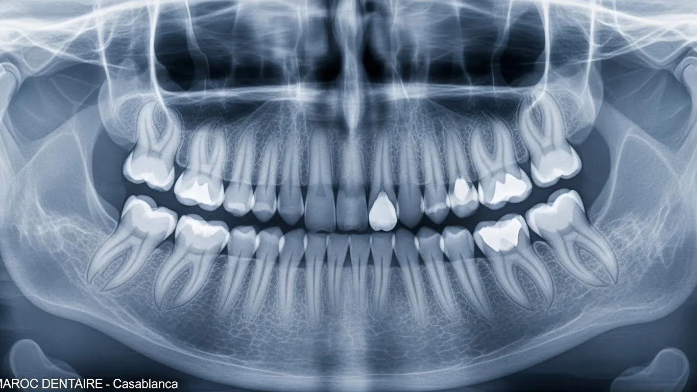
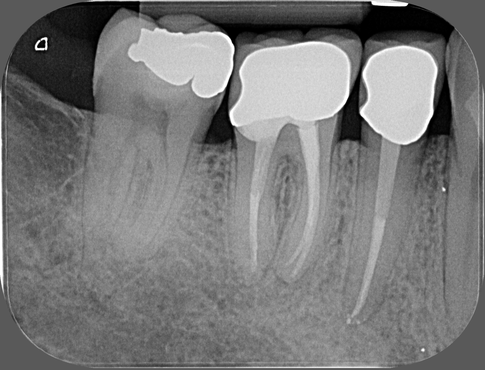

Radiographie
Des examens d'imagerie modernes, rapides et indolores pour un diagnostic précis, une planification optimale des soins et une exposition minimale aux rayons X.

Radiographie panoramique
La radiographie panoramique est un examen d'imagerie dentaire essentiel qui permet d'obtenir une vue d'ensemble complète des dents, des mâchoires, des articulations temporo-mandibulaires ainsi que des structures osseuses environnantes. Cet examen rapide et indolore constitue un outil diagnostique fondamental en dentisterie.
-
Vue d'ensemble
Visualisation simultanée de toutes les dents, des mâchoires et des articulations temporo-mandibulaires en un seul cliché.
-
Détection pathologies
Repère les caries invisibles à l'œil nu, les infections, les kystes et les dents incluses inaccessibles à l'examen clinique classique.
-
Sécurité & précision
Réalisée avec des appareils de dernière génération garantissant une image haute qualité avec une exposition minimale aux rayons X.

Radiographie rétro-alvéolaire
La radiographie rétro-alvéolaire est un examen d'imagerie dentaire ciblé permettant de visualiser avec précision une ou plusieurs dents, depuis la couronne jusqu'à l'extrémité des racines ainsi que l'os environnant. Elle constitue un outil indispensable pour des diagnostics fiables et des traitements parfaitement adaptés.
-
Analyse des racines
Visualisation détaillée de chaque dent de la couronne jusqu'à la pointe des racines et de l'os alvéolaire environnant.
-
Diagnostic localisé
Détection des caries profondes, infections radiculaires, lésions osseuses et évaluation de la qualité des traitements endodontiques (traitements de canal).
-
Rapide & sécurisé
Examen réalisé en quelques secondes avec un niveau d'exposition aux rayons X très faible, dans le respect des normes de sécurité et du confort du patient.